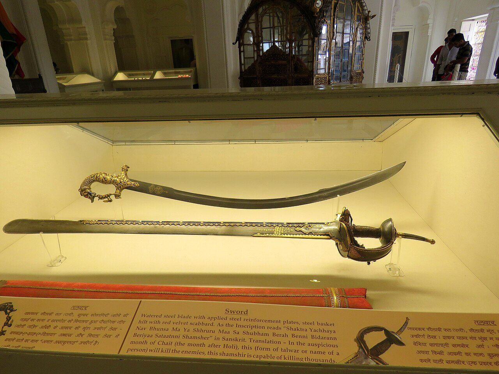
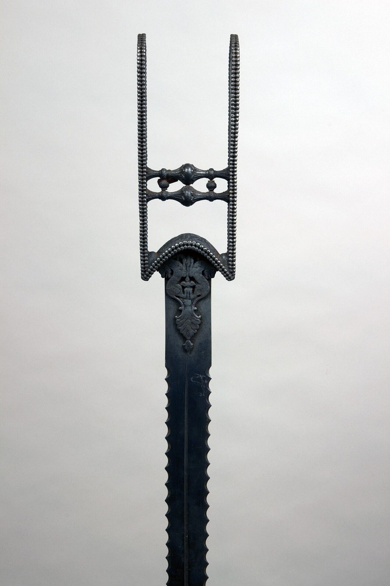
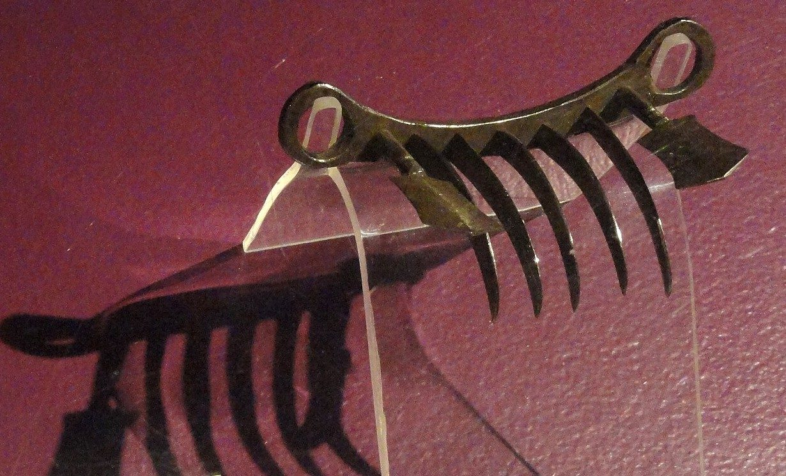
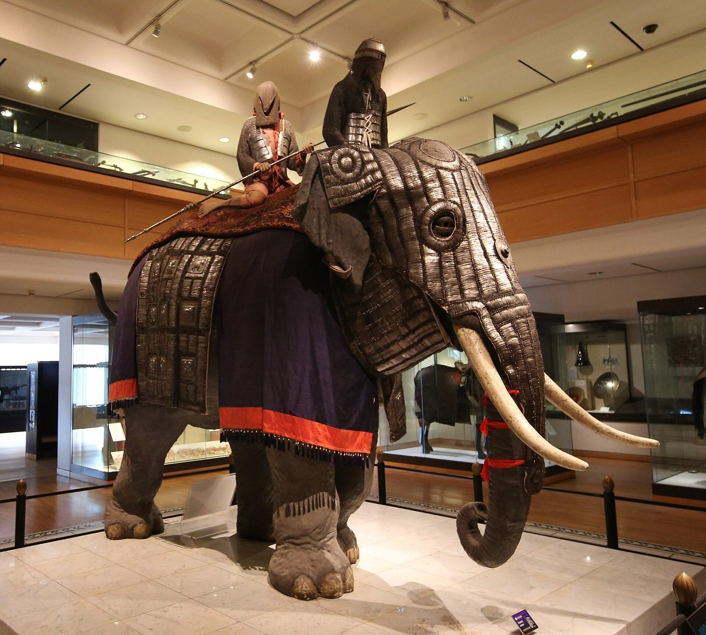
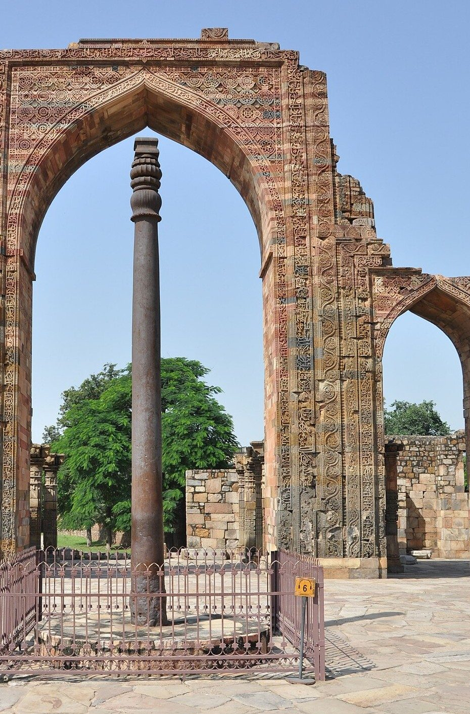
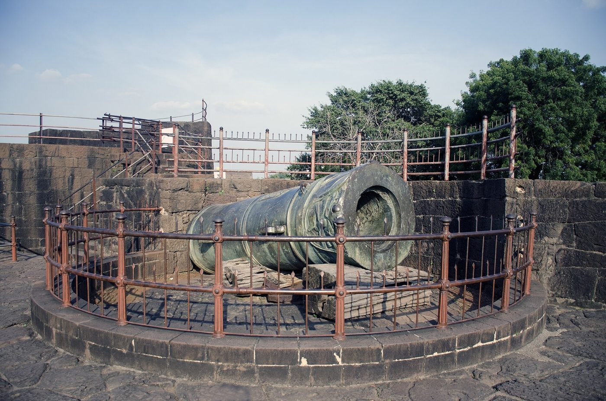
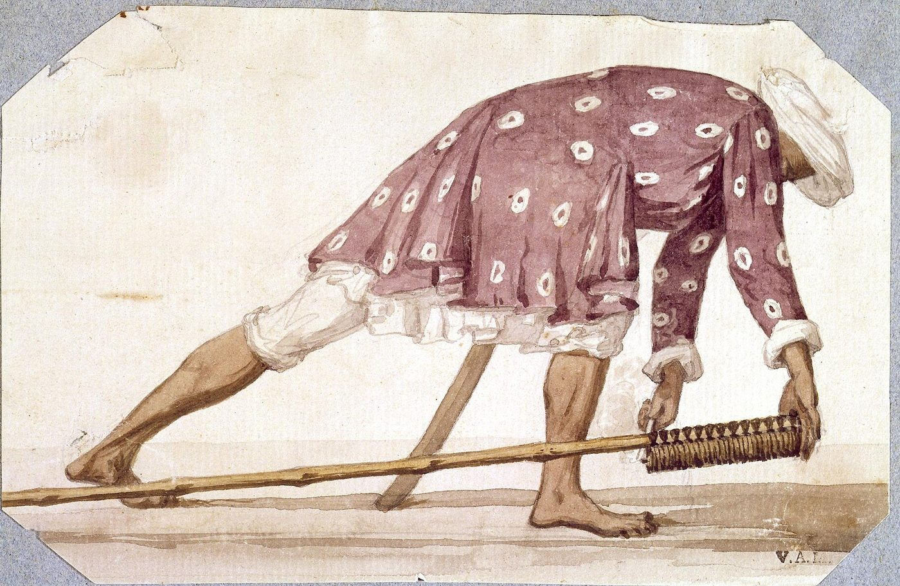

Chapter 5: Weapons, Armour and Military Technology¶
5.1 Introduction¶
The weapons of Indian armies changed greatly over three thousand years. The copper and bronze blades of the Harappans gave way to iron in the first millennium BCE; the chariot-archer of the Vedic hymns gave way to the elephant and then to the mounted archer and lancer; and from the fifteenth century gunpowder weapons gradually transformed warfare, until by the late eighteenth century the decisive arms were field artillery and drilled infantry with flintlocks. Through all these changes Indian smiths, armourers and gun-founders produced weapons of great quality, and Indian crucible steel was famous across Asia and Europe.
This chapter surveys the main categories of weapons and armour, the textual classifications, the metallurgy that supported them, and the coming of gunpowder, including the much-discussed rockets of Mysore. The evidence before about 1500 comes chiefly from texts, sculpture and a small number of excavated objects; for the period after 1500 the great museum collections of arms and armour, in India and abroad, are the main source (Elgood 2004; Egerton 1880).
5.2 Textual Classifications¶
5.2.1 The Arthaśāstra¶
The chapter of the Arthaśāstra on the superintendent of the armoury (AŚ 2.18) is the earliest systematic Indian list of weapons (Kangle 1960–1965; Olivelle 2013). It divides them into fixed machines (sthitayantra), mounted on walls and gates; mobile machines (calayantra); weapons with pointed heads, such as various kinds of spear and javelin (śakti, prāsa, kunta, tomara, śūla and others); bows, bowstrings and arrows; swords; razor-edged weapons such as axes; “weapons of stone” (missiles and sling-stones); armour; and accessories such as the elephant goad and the chariot-banner. Several of the machine names are obscure. One of them, the śataghnī (“hundred-killer”), has attracted much speculation. The text gives no clear description, and commentators and modern scholars have interpreted it as a heavy spiked log or pillar dropped or rolled from a rampart onto attackers. There is no basis for the popular claim that it was a multi-barrelled gun or a multiple-arrow launcher.
5.2.2 The classes of the Agni Purāṇa¶
The Agni Purāṇa’s chapters on dhanurveda classify fighting by the way the weapon is used: released by a machine (yantramukta), such as the bow and the sling; released by the hand (pāṇimukta), such as stones and javelins; released and recovered (muktasandhārita), such as the lance; not released (amukta), such as the sword; and without weapons (AP 248.2–5; Section 4.7.2) (Mitra 1870–1879; Gangadharan 1984–1987). The “machine” here is first of all the bow itself, not a catapult or a rocket. Modern books often give instead a fourfold scheme in which the last class is weapons “released by spell” (mantramukta), the divine weapons of the epics (Chapter 4); that is not the scheme of these chapters. A simpler distinction, found in many texts, opposes śastra, a weapon held in the hand, to astra, a missile weapon or one released by spell.
These classifications are learned schemes. Actual armouries contained a variety of weapons that changed with fashion, supply and the influence of neighbours, and the names of medieval and early modern weapons are mostly not Sanskrit but Persian, Hindustani, Marathi and other vernacular terms.
5.3 A Guide to Weapon Names¶
Readers of Indian sources meet a bewildering variety of weapon names. Table 5.1 lists some of the most common, with their approximate meanings. Sanskrit names, mostly from the epics, the Arthaśāstra and the Purāṇas, cannot always be matched with surviving objects, and their translations are often conventional; the later names, mostly Persian and Hindustani, refer to weapons that survive in collections (Elgood 2004; Egerton 1880; Hopkins 1889).
| Name | Language, period | Meaning or description |
|---|---|---|
| asi, khaḍga, nistriṃśa | Skt., early | Sword |
| śakti | Skt., early | Spear or javelin; also the weapon of Skanda |
| prāsa, kunta | Skt., early | Spear, lance |
| tomara | Skt., early | Javelin or heavy throwing spear |
| bhiṇḍipāla | Skt., early | A throwing weapon, possibly a short heavy javelin |
| śūla, triśūla | Skt. | Spear; trident |
| gadā, musala, parigha | Skt. | Mace; pestle-club; iron-bound club |
| paraśu, kuṭhāra | Skt. | Axe |
| cakra | Skt. | Discus; later the Sikh throwing quoit (cakkar) |
| pāśa | Skt. | Noose |
| nārāca, bhalla, kṣurapra | Skt. | Kinds of arrow (iron, broad-headed, razor-headed) |
| śataghnī | Skt. | “Hundred-killer”; probably a heavy spiked object used in fort defence |
| khaṇḍā | Hindi, medieval | Straight broad-bladed sword |
| talwār | Hindi, medieval–modern | Curved sabre with disc pommel |
| shamshīr | Persian | Strongly curved sabre |
| firangī | Hindi/Persian | Straight sword with a European blade |
| paṭā | Marathi/Hindi | Gauntlet sword |
| uṟumi | Malayalam | Flexible sword |
| kaṭār, jamadhar | Hindi | Push-dagger |
| bichuā | Hindi | “Scorpion”: small curved dagger with loop hilt |
| khanjar, peshqabz | Persian | Curved and straight daggers |
| bāgh nakh | Hindi/Marathi | “Tiger claws” concealed in the hand |
| barchhā, nezā, bhālā, sāṅg | Hindi/Persian | Lance, spear, all-iron spear |
| gurz, shashpar | Persian | Flanged or ribbed mace |
| tabar, zaghnol | Persian | Battle-axe; armour-piercing pick |
| dhāl, sipar | Hindi; Persian | Shield |
| zirih, chār-āʾīna | Persian | Mail; “four mirrors” plate cuirass |
| toṛādār, bandūq, tufang | Hindi; Persian | Matchlock, musket |
| jezail | Afghan/Persian | Long gun of the north-west frontier |
| shutarnāl, zamburak | Persian | Camel-mounted swivel gun |
| bān | Hindi | Rocket |
5.4 Weapons in Sculpture and Painting¶
For the period before about 1500, sculpture is the main visual evidence for Indian weapons. The reliefs of the early Buddhist monuments at Sāñcī and Bhārhut show soldiers with bows, swords, spears and shields; Gupta and post-Gupta sculpture shows the weapons carried by deities, which often reflect real weapons; and medieval temples in Karnataka, Odisha, Rajasthan and elsewhere have friezes of soldiers, cavalry and elephants. Hero-stones show the weapons of ordinary fighters — bows, swords, spears and shields — with considerable realism. The interpretation of this evidence requires care, because sculptors followed conventions and often represented weapons schematically, and because the weapons of gods were partly symbolic.
For the period after 1500, painting is a rich source. The illustrated manuscripts of the Mughal court, Rajput and Pahari painting, and Deccani painting show armies, weapons, armour and horse equipment in detail, and can sometimes be compared with surviving objects. Elgood and other specialists have used such comparisons to date and identify weapons in collections (Elgood 2004).
5.5 Swords¶
5.5.1 Early swords¶
The Vedic word asi may refer to a knife or short sword; by the time of the epics the sword (khaḍga, asi, nistriṃśa) is a regular weapon of the warrior, used with a shield. Sculpture of the early centuries CE shows straight, broad, double-edged swords, often with a pointed or leaf-shaped tip. The Greek writers report that Indian swords were broad and long and wielded with two hands; and the first-century Periplus of the Erythraean Sea lists Indian iron and steel among the goods traded to the ports of the Red Sea, an early reference to the export of Indian metal.
5.5.2 Medieval and early modern swords¶
The best-known Indian sword types belong to the medieval and early modern periods (Figure 5.1) (Elgood 2004):
-
The khaṇḍā is a straight, broad, double-edged sword, often with a blade that widens towards a blunt or rounded tip and with a basket hilt. It is associated particularly with Rajput and Maratha warriors and with the Sikh emblem of the same name.
-
The talwār is a curved, single-edged sabre with a characteristic hilt ending in a disc-shaped pommel. Curved swords of this kind reached India with the Turkic and Persian cavalry of the medieval period, and the talwār became the most common sword of north and central India from the sixteenth century.
-
The shamshīr, a more sharply curved Persian sabre, was also used, especially at the Mughal and Deccan courts.
-
The firangī (“foreign”) is a long straight blade, often imported from Europe, mounted in an Indian basket hilt. Firangīs were popular with Maratha cavalry in the seventeenth and eighteenth centuries.
-
The paṭā or daṇḍ-paṭṭā is a gauntlet sword: a long straight blade fixed to an iron gauntlet that encloses the hand and forearm (Figure 5.2). It is associated particularly with Maratha warriors.
-
The uṟumi, a long flexible blade of thin steel, coiled when not in use, belongs to the martial culture of Kerala (Chapter 15).
-
Regional forms include the heavy chopping knife of Coorg, the ayda katti, and the broad-bladed dhop and pattisa of the Deccan.


Swords were more than weapons. Famous blades were named, inherited and given as gifts; a sword could stand in for an absent bridegroom at a Rajput wedding; and the presentation of a sword was a mark of honour at Mughal and Maratha courts. Śivājī’s sword, called Bhavānī, became a symbol of Maratha identity.
5.6 Daggers and Close-Combat Weapons¶
India produced an exceptional variety of daggers:
-
The kaṭār (also jamadhar) is a push-dagger with a triangular blade attached to a hilt of two parallel bars joined by cross-grips, so that the blade projects forward from the fist and is driven by a punching motion (Figure 5.2). Kaṭārs appear in sculpture of the Vijayanagara period and became widespread across India in the sixteenth and seventeenth centuries. Some later examples have blades that split into three when the grips are squeezed; others contain a small pistol. The kaṭār’s thick, stiff point was well suited to piercing mail.
-
The bichuā (“scorpion”) is a small curved dagger with a loop hilt; the khanjar and peshqabz are curved and straight daggers of Persian and Afghan type; the chilanum is a double-curved dagger of the Deccan.
-
The bāgh nakh (“tiger’s claws”) is a set of curved blades on a bar worn across the palm, concealed in the hand (Figure 5.3). By Maratha tradition it was the weapon with which Śivājī killed the Bijapur general Afzal Khān in 1659 (Section 9.16) (Sarkar 1919; Gordon 1993).

_MET_36.25.907_001July2014.jpg){kind=link}

,_western_India,_1700s-1800s_-_Higgins_Armory_Museum_-_DSC05600.JPG){kind=link}
5.7 Spears, Maces and Axes¶
The spear was the commonest weapon of Indian infantry and an important cavalry weapon. Sanskrit texts distinguish many kinds of thrusting and throwing spears (śakti, prāsa, kunta, tomara, bhiṇḍipāla, śūla), though it is not always possible to match the names with surviving objects. Later armies used the long lance (barchhā, nezā) of the cavalry, the heavy spear (bhālā), and the all-iron spear (sāṅg). The Maratha light horseman’s long bamboo lance was famous, and Sikh and Maratha cavalry were feared lancers in the eighteenth century.
Maces (gadā, musala, parigha) appear in the epics as the weapons of Bhīma, Duryodhana and Balarāma. In the medieval period the flanged and spiked maces of Turkic and Persian armies (gurz, shashpar) were used against armoured opponents. The axe (paraśu, kuṭhāra) was a weapon of the god-hero Paraśurāma and of many infantrymen; the tabar (battle-axe) and the zaghnol (“crow’s beak”), a pick with a narrow armour-piercing point, were used by cavalry and infantry in Mughal times. The bhuj of Kutch and Sindh, a heavy knife-blade on a short haft, combined axe and dagger.
5.8 Shields and Armour¶
5.8.1 Shields¶
The commonest Indian shield (dhāl, Sanskrit carman, phalaka, kheṭaka) was round, convex and of moderate size, made of hide — buffalo and rhinoceros hide were prized — or of steel, with bosses on the front holding the hand-grips behind. Lacquered and painted hide shields and steel shields inlaid with gold were made for the courts. Cane and wicker shields were used in eastern India and the north-east, and large standing shields protected archers and musketeers at sieges.
5.8.2 Body armour¶
The Vedic and epic warrior wore armour (varman, kavaca) of some kind, but its form is not clear. In the hot climate of most of India, heavy armour was uncomfortable, and quilted cotton coats were widely worn; some were reinforced with plates or studs. Mail (Persian zirih) became common with the Turkic and Persian cavalry of the medieval period, and the Mughal and Rajput armour of the sixteenth to eighteenth centuries combined a mail shirt with the chār-āʾīna (“four mirrors”), four shaped plates protecting chest, back and sides, a domed helmet with a sliding nasal and mail neck-guard, and arm-guards (dastāna). Horses of heavy cavalry wore mail and plate, and elephants armour of plates or quilting (Section 5.11) (Elgood 2004).
5.9 The Makers of Arms¶
Weapons were made by specialised craftsmen whose skills were usually hereditary. Ironsmiths (Sanskrit karmāra, Hindi lohār, Tamil and Kannada kollar, kammāra) made blades, arrowheads and armour; bowyers, fletchers, leather-workers, carpenters, lacquer-workers and goldsmiths contributed to bows, shields, scabbards and hilts. The Arthaśāstra places weapon-making under the superintendent of the armoury, who was to employ artisans in state workshops and to test their products (Kangle 1960–1965). In south India, smiths and other artisans of the five metal and wood crafts formed the Viśvakarma (Kammāḷar) communities, which claimed descent from the divine architect Viśvakarman and a high ritual status, a claim disputed by other groups. Among the Sikhs, the Sikligar community of weapon-polishers and smiths became closely associated with the Khalsa in the eighteenth century.
Several regions were famous for particular products. South India and Sri Lanka produced crucible steel; Gujarat, Sindh, Lahore, Sialkot and Gwalior were known for sword blades and firearms; Rajasthan and the Deccan for decorated arms and armour; and Kutch and Kathiawar for shields. Arms were also imported: Persian and later European sword blades were prized, and the firangī sword was named after its European blade.
5.10 Armour in Practice¶
How much armour did Indian soldiers actually wear? The answer varied with period, wealth and arm. Heavy cavalry of the Turkic and Mughal armies wore mail and plate and rode armoured horses; Rajput nobles wore mail coats and chār-āʾīna; infantry often wore quilted cotton coats or no armour at all. Climate limited the use of heavy armour: European observers in the seventeenth and eighteenth centuries remarked on the light equipment of most Indian soldiers compared with European infantry of the previous century. As firearms improved, armour declined, though mail and helmets continued to be worn by cavalry into the nineteenth century, and Sikh Akālīs and some Rajput nobles still wore armour at the time of the Anglo-Sikh wars (Elgood 2004).
5.11 Armour for Horses and Elephants¶
Armour was not only for men. As the heavy cavalry of the Turkic and Persian traditions became the core of north Indian armies after about 1000, armour for horses became more common. Persian sources call it bargustuvān, and the Āʾīn-i Akbarī lists it among the equipment of the imperial cavalry (Blochmann 1873). Horse armour of the Mughal and later periods, surviving in museum collections, usually consists of a mail-and-plate trapper covering the neck, chest and flanks, with a shaffron of steel plates protecting the horse’s face. It was heavy and expensive, and only the richest horsemen could afford it for their mounts; most Indian cavalry fought on unarmoured horses, relying on speed rather than protection (Gommans 2002; Elgood 2004).
Elephants, the most valuable animals in the army, were also protected. The Mahābhārata and later poetry describe war elephants caparisoned and armoured, and Persian chroniclers describe elephants covered with plates of steel, with swords or blades fastened to their tusks and chains swung from their trunks. These descriptions are partly literary, but some elephant armour survives. A large elephant armour of mail and plates, thought to date from around 1600 and brought to Britain at the beginning of the nineteenth century, is now in the Royal Armouries at Leeds; it is one of very few such pieces to have survived anywhere (Figure 5.4) (Elgood 2004). Such armour protected the elephant’s head, trunk and flanks against arrows and spears, though not against the cannon and musket balls that made elephants increasingly vulnerable after the sixteenth century (Chapter 6).


The decline of animal armour followed the same path as that of human armour. Against firearms it gave little protection for a great deal of weight and cost, and by the eighteenth century it survived mainly as a feature of ceremonial display, worn by the horses and elephants of princes in processions rather than in battle.
5.12 Iron and Steel¶
5.12.1 The Iron Age¶
Iron came into use in India in the late second and early first millennium BCE; the dates are debated, but iron objects are well attested in the Ganges valley and the Deccan by the early first millennium BCE. The megalithic burials of the south contain many iron weapons. The spread of iron tools and weapons was one of the conditions for the growth of kingdoms and cities in the Ganges valley (Thapar 2002).
5.12.2 The Delhi iron pillar¶
The most famous Indian iron object is the pillar now standing in the Qutb complex at Delhi (Figure 5.5), which carries an inscription of a king named Candra, generally identified with the Gupta ruler Candragupta II (c. 375–415 CE). It is over seven metres high and weighs about six tonnes, and it has resisted corrosion remarkably well for some sixteen centuries. R. Balasubramaniam’s studies attribute this to the composition of the iron, which contains a relatively high proportion of phosphorus and very little sulphur, and to the formation of a thin protective layer, including a crystalline iron hydrogen phosphate, on its surface, helped by the alternation of wet and dry seasons (Balasubramaniam 2002). The pillar was built up by forge-welding many lumps of iron, a technique requiring great skill. It is evidence of advanced craftsmanship; it does not show that ancient smiths possessed modern scientific knowledge.


5.12.3 Crucible steel¶
South India and Sri Lanka were centres of production of crucible steel, known in English as wootz, from the Kannada and Telugu word ukku. In this process iron was sealed in clay crucibles with carbonaceous material such as wood or leaves and heated for many hours, so that it absorbed carbon and melted, forming small cakes of high-carbon steel. Forged with great care at controlled temperatures, the steel developed a characteristic watered pattern. Sharada Srinivasan and Srinivasa Ranganathan have traced the archaeological and textual evidence for this industry in south India, with production sites in Telangana, Tamil Nadu and Karnataka, and its export to the Middle East, where steel cakes were forged into the blades that Europeans called “Damascus” swords (Srinivasan and Ranganathan 2004).
Scientific study of these blades has revealed their remarkable structure. In 2006 a team led by M. Reibold reported, from electron microscopy of a seventeenth-century Damascus sabre, the presence of carbon nanotubes and cementite nanowires in the steel (Reibold et al. 2006). This finding helps to explain the patterning and properties of such steel; it does not mean that historical smiths understood or intended nanostructures, which arose from the empirical process they had perfected.
The industry declined in the nineteenth century. Contributing factors included competition from cheap European steel, the collapse of the market for traditional swords as armies adopted firearms, the disarming of Indian society after 1857, and the loss of skilled lineages. The knowledge of the process was not entirely lost — it was recorded by European observers in the early nineteenth century — but production ceased, and modern attempts to reproduce the steel have relied on historical description and scientific analysis.
5.13 Machines and Siege Engines¶
Early Indian texts refer to machines (yantra) for war, most of them for the attack or defence of forts. The Jain canonical tradition credits Ajātaśatru of Magadha with a stone-throwing machine (Chapter 2), the Arthaśāstra lists fixed and mobile machines, and Bhoja’s Samarāṅgaṇasūtradhāra discusses machines for defending a fort. Their construction is rarely described clearly. Medieval Persian chronicles describe sieges conducted with the counterweight trebuchet (manjanīq) and with protected approaches (sābāṭ) built up to the walls under cover; the trebuchet had spread across the Islamic world from the twelfth century and was used in the sieges of the Delhi Sultanate (Jackson 1999). Chapter 10 discusses sieges in more detail.
5.14 Gunpowder¶
5.14.1 Origins and arrival¶
Gunpowder was invented in China, where it was in military use by the eleventh century and where guns developed in the thirteenth. Claims that it was known in ancient India rest on misreadings. Oppert’s arguments of 1880 relied heavily on the Śukranīti and similar texts (Oppert 1880), which are now known to be late; the Śukranīti in its present form is a nineteenth-century work (Gopal 1962). References to “fire” weapons in earlier texts concern incendiary arrows and pots of burning material, not explosives.
Iqtidar Alam Khan’s study of gunpowder in medieval India argues that knowledge of gunpowder reached India in the thirteenth or fourteenth century, probably through the Mongols, and that it was first used in fireworks and rockets; firearms in the proper sense appear in the fifteenth century, in the Deccan and in Gujarat and other regions, and spread widely after 1500 (Khan 2004). Firishta’s earlier date for Bahmanī artillery is discussed in Section 8.17. Portuguese and Ottoman gunners and founders served Indian rulers in the early sixteenth century, and both the Bahmanī successor sultanates and Vijayanagara used guns in their wars (Eaton 2005).
5.14.2 The Mughal artillery¶
Bābur’s victory at Pānīpat in 1526 owed much to his field guns and matchlocks, deployed behind carts chained together in the Ottoman manner and directed by his gunners Ustād ʿAlī-qulī and Muṣṭafā (Thackston 1996). Under Akbar and his successors the Mughal army maintained a large artillery establishment, from heavy siege guns drawn by elephants and oxen to light pieces carried on camels (shutarnāl) and swivel guns. The matchlock (tufang, bandūq) became the standard infantry firearm, and large numbers of matchlockmen (barqandāz) were recruited across north India (Gommans 2002; Kolff 1990).
The Deccan sultanates cast some of the largest guns of the age. The bronze gun called Malik-i Maidān (“lord of the battlefield”), cast in the mid-sixteenth century and now on a bastion at Bijapur, is over four metres long (Figure 5.6). Great guns of this kind were symbols of power as much as weapons; their weight made them difficult to move, and they were mainly used in sieges and fortress defence. The Jaivana gun at Jaigarh near Jaipur, cast in the eighteenth century, belongs to the same tradition.


5.14.3 Firearms in the eighteenth century¶
In the eighteenth century the flintlock musket, bayonet and light field artillery of European armies spread to Indian states. The Marathas, the Nizam, Mysore, the Sikh kingdom of Ranjit Singh and others raised infantry trained in European drill, often with European officers, and established foundries and arsenals (Roy 2011). Indian gun-founders produced artillery of high quality: British officers who captured Mysore and Sikh guns in the late eighteenth and nineteenth centuries often remarked on it. The gap between Indian and Company armies by 1800 lay less in weapons than in finance, organisation, discipline and the regular payment of soldiers (Chapter 19).
5.15 Saltpetre and Gunpowder Production¶
Gunpowder is a mixture of saltpetre (potassium nitrate), sulphur and charcoal, and saltpetre was its most important and most difficult ingredient. India, and especially Bihar and Bengal, was one of the world’s major sources of saltpetre, which formed naturally in the soils of the Ganges plain and was refined by specialised workers. From the seventeenth century, the Dutch and English East India Companies exported large quantities of Indian saltpetre to Europe, where it supplied the gunpowder of European armies and navies; control of the saltpetre trade was one of the Companies’ interests in Bengal and Bihar. Indian rulers produced their own gunpowder in workshops attached to their arsenals, and the quality of Indian powder varied. The abundance of saltpetre in India helps to explain the rapid spread of firearms and rockets in Indian warfare once the technology had arrived (Khan 2004).
5.16 Arsenals and the State¶
Large states maintained arsenals and workshops. The Mughal emperors’ household included many workshops (kārkhāna), among them the armoury (qūrkhāna) and the artillery establishment, and the Āʾīn-i Akbarī describes Akbar’s personal interest in weapons: it says that he devised improvements in the manufacture of matchlocks and in the cleaning of gun barrels, and that the imperial arsenal kept weapons graded by quality and weight (Blochmann 1873; Irvine 1903). Abū’l-Faẓl’s descriptions are courtly praise, but they show the importance attached to firearms at the Mughal court.
In the eighteenth century the successor states built arsenals and foundries on a larger scale. Tipu Sultan’s capital Srirangapatna had foundries for cannon, workshops for muskets and rockets, and stores of powder and shot; Tipu also tried to obtain craftsmen and machinery from France (Roy 2011). The Maratha powers, the Nizam and the nawabs of Awadh and Bengal employed European gun-founders and officers. Ranjit Singh established foundries at Lahore, where guns were cast under the direction of Indian and European specialists, and the Sikh army’s artillery was regarded by its British opponents as excellent. The East India Company built its own gun foundry at Cossipore near Calcutta, and powder works at Ishapore, in the late eighteenth and early nineteenth centuries.
5.17 Firearms in Practice¶
5.17.1 Infantry firearms¶
The standard Indian infantry firearm from the sixteenth to the eighteenth century was the matchlock (toṛādār, from toṛā, the slow-match), a long-barrelled gun fired by bringing a smouldering cord into contact with the priming powder. Indian matchlocks were often very long, with slender stocks, and were fired from the shoulder or the chest; they were accurate in skilled hands but slow to load and vulnerable to rain. Matchlockmen (barqandāz, bandūqchī) were recruited in large numbers from the military labour market, especially in the eastern Ganges valley and Bundelkhand (Kolff 1990). The long Afghan matchlock or flintlock called jezail was famous on the north-western frontier. The flintlock, which fired by a spark from flint striking steel and was quicker and more reliable, spread among Indian armies in the eighteenth century, largely through the European companies.
5.17.2 Light artillery¶
Light guns were mounted on camels (shutarnāl, zamburak) and fired from a kneeling camel, giving the Mughal, Persian and Afghan armies mobile firepower; Nādir Shāh’s camel guns were effective against the Mughal army at Karnal in 1739. Swivel guns were mounted on walls and boats, and small guns on elephants. Hand grenades (ḥuqqa) of pottery or metal were used in sieges, and rockets (bān) were carried by specialised rocket-men in Mughal and Maratha armies (Section 5.18).
5.17.3 Heavy artillery¶
Heavy guns were used mainly in sieges and in the defence of forts. They were very heavy to move: great siege guns were drawn by teams of oxen and elephants, and an army with a large artillery train moved slowly. Gunners were often specialists from outside, at least at first: Ottoman (Rūmī) gunners served Bābur and the Gujarat and Deccan sultans; Portuguese and other Europeans (firangī) served many Indian rulers; and in the eighteenth century French and other European officers trained Indian artillerymen. By the eighteenth century, Indian gunners (golandāz) were numerous and skilled. Iqtidar Alam Khan’s study traces the adoption of these weapons and the debates among Mughal nobles about their value (Khan 2004).
5.18 The Rockets of Mysore¶
5.18.1 Haidar Ali and Tipu Sultan¶
Rockets were used in Indian warfare from at least the fifteenth century, according to Khan’s evidence (Khan 2004); they were common in Mughal and Maratha armies, where they served mainly to frighten elephants and horses and to harass enemy formations. The rulers of Mysore, Haidar Ali (r. 1761–1782) and his son Tipu Sultan (r. 1782–1799), developed them into a more formidable weapon. Their rockets had cases of iron rather than paper or bamboo. The iron case could contain a more tightly packed and more powerful charge, giving greater range and power. The rockets were bound to long bamboo poles (Figure 5.7), sometimes fitted with blades, and fired in large numbers by specialised companies of rocket-men. The engineer Roddam Narasimha, in his study of Mysore rockets, estimates their range at up to a kilometre or more (Narasimha 1985).

.jpg){kind=link}
Mysore rockets were used against the East India Company’s armies throughout the Anglo-Mysore wars, from Pollilur in 1780 to the defence of Srirangapatna in 1792 and 1799 (Sections 18.5 and 10.15). British accounts record the alarm and casualties they caused, though they were not decisive weapons in themselves.
5.18.2 From Mysore to Congreve¶
After the fall of Srirangapatna in 1799, rockets and rocket cases were taken to Britain. William Congreve, at the Royal Arsenal in Woolwich, began experiments from about 1804 and developed a series of iron-cased military rockets for the British army and navy. Congreve’s rockets were used against Boulogne and Copenhagen in the Napoleonic wars and against the United States in the war of 1812 (Narasimha 1985). The Mysore rockets thus influenced Congreve’s work: that is the precise and well-documented link. They were not the origin of rocketry, which goes back to medieval China, and the claim that “modern rocketry began in Mysore” overstates a real but specific contribution. The Mysore rockets deserve recognition as an effective adaptation of an existing weapon, and as one of the few cases in which an Indian military innovation was adopted by a European army.
5.19 Military Technology and Its Limits¶
It is sometimes argued that Indian states fell to the Europeans because their military technology was backward. The evidence reviewed in this chapter does not support so simple a view. Indian smiths made excellent steel and blades; Indian founders cast large and serviceable guns; Indian rulers adopted matchlocks, flintlocks and field artillery, and developed effective rockets. In the eighteenth century the armies of Mysore, the Marathas and the Sikhs were well equipped by the standards of the time (Roy 2011).
There were, however, real differences. European states had developed, over the seventeenth and eighteenth centuries, methods of mass production of standardised muskets and cannon, systems of drill and tactics adapted to them, and military engineering and artillery schools; Indian states adopted these methods, but often depended on European specialists to apply them. More important than technology, as Chapter 19 argues, were finance, organisation and political cohesion. The history of Indian military technology is a history of skill and adaptation, not of backwardness — but technology alone did not decide the outcome of wars.
5.20 Decoration and Display¶
Indian arms were often works of art. Hilts and blades were decorated with gold or silver wire inlaid into a cross-hatched steel surface (koftgarī), with enamel, with gems and with carved jade, ivory or rock crystal. Bidar in the Deccan gave its name to bidrī, an alloy of zinc inlaid with silver, used for hookahs and boxes more than for weapons. Inscriptions on blades recorded owners, prayers and verses in Persian, Arabic, Sanskrit and the vernaculars. Mughal and Rajput painting shows rulers and nobles with richly decorated swords, daggers and shields as emblems of rank (Elgood 2004). Such display weapons were often fully functional.
5.21 Indian Arms in Museum Collections¶
Much of what is known about Indian arms and armour after 1500 comes from collections. In India, the National Museum in New Delhi, the Salar Jung Museum in Hyderabad, the City Palace Museum at Jaipur, the Mehrangarh Museum at Jodhpur and many other princely and state museums hold important collections. Abroad, the Royal Armouries at Leeds, the Victoria and Albert Museum and the Wallace Collection in London, and the Metropolitan Museum of Art in New York hold large collections, many of them formed from objects taken during the colonial conquests or bought from princely families. Robert Elgood’s studies of Hindu arms and of the armoury of the Rathor court at Jodhpur, and Lord Egerton’s nineteenth-century catalogue, are the standard guides (Elgood 2004, 2017; Egerton 1880). The study of these objects — their metallurgy, inscriptions, decoration and provenance — is one of the most active fields of Indian military history.
5.22 Myths About Indian Weapons¶
Several popular claims about Indian weapons have been examined in this chapter: that the śataghnī was a gun, that wootz steel was deliberate “nanotechnology”, that the Delhi pillar was made by techniques science cannot explain, and that the rockets of Mysore were the first rockets. Together with the older claim of ancient firearms and aircraft (Chapter 4), they are summarised in Table 20.1. Correcting these myths does not diminish the real achievements of Indian smiths, armourers and gun-founders, which are impressive enough without exaggeration.
5.23 Weapons as Trophies and Relics¶
Weapons taken in war became trophies, and the weapons of famous warriors became relics. Indian rulers displayed captured guns and standards; Mughal chroniclers record the arms taken from defeated enemies; and Sikh shrines preserve weapons associated with the Gurus, which are shown to devotees. After the colonial conquests, large quantities of Indian arms were taken to Britain as trophies and souvenirs. After the fall of Srirangapatna in 1799, Tipu Sultan’s weapons, his throne and the mechanical organ known as “Tipu’s Tiger” (Section 18.5) were among the objects taken. Some of these objects have since been sold at auction and returned to India by private buyers, and the return of looted objects is now part of a wider international debate about colonial collections. The history of Indian arms is thus also a history of their movement, as gifts, trophies, loot and museum objects.
5.24 The Sword in Ritual and Symbol¶
The sword acquired rich symbolic meanings in Indian culture. It was an emblem of sovereignty, carried before kings in procession and held by them in their portraits; it was worshipped as a form of the goddess, and it could stand for an absent Rajput bridegroom (Section 5.5). In Sikh tradition the double-edged sword (khaṇḍā) is used to stir the water of initiation into the Khalsa, and it gives its name to the Sikh emblem, which combines it with a quoit and two curved swords representing temporal and spiritual authority. The carrying of the kirpān by initiated Sikhs is a religious obligation. The sword’s symbolic importance long outlived its military usefulness and remains visible in ritual, art and politics today.
5.25 Weapons, Status and Ritual¶
In pre-colonial India the right to carry weapons was widespread, and weapons were marks of status. Rajput and Maratha men of rank carried swords on all public occasions; peasants kept spears and matchlocks for defence and for service as seasonal soldiers; merchants travelled with armed guards (Kolff 1990). Weapons were also honoured in ritual. On the ninth day of the autumn festival of Navarātri, in many parts of India, weapons and tools are cleaned, decorated and worshipped (āyudhapūjā), and kings marked Daśahrā with displays of arms and armies (Chapter 13). The colonial Arms Act of 1878, which required licences to possess arms, therefore struck at social identity as well as at military capacity (Chapter 19).
Further Reading¶
-
Elgood (2004): arms and armour from India, 1400–1865, with excellent illustrations.
-
Egerton (1880): a classic catalogue of Indian arms.
-
Srinivasan and Ranganathan (2004): the history and science of Indian crucible steel.
-
Balasubramaniam (2002): the Delhi iron pillar.
-
Khan (2004): gunpowder and firearms in medieval India.
-
Narasimha (1985): the rockets of Mysore and their influence in Britain.